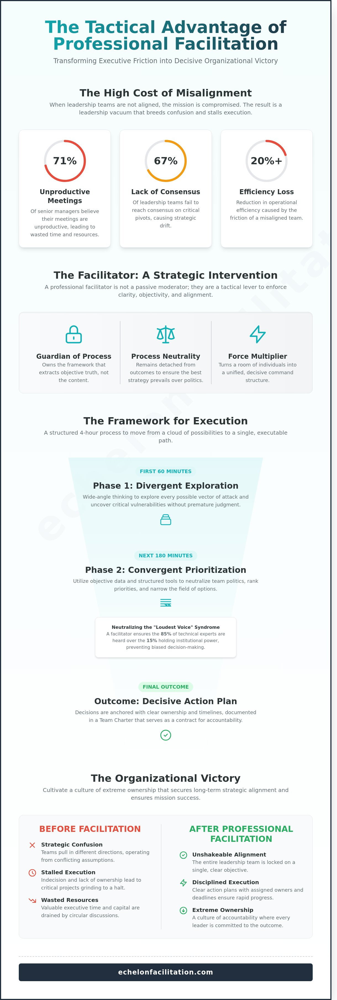

A failed strategy session costs more than just eight hours of executive time; it compromises the entire mission. When 71% of senior managers admit their meetings are unproductive, the result is a leadership vacuum that breeds confusion and stalls execution. You’ve likely felt the friction of a team pulling in different directions while the clock drains your most valuable resource. Professional workshop facilitation is not a soft skill for corporate retreats. It’s a tactical lever used to force clarity and secure unshakeable team alignment under pressure.
This guide provides the framework to transform executive friction into a decisive organisational victory. You’ll learn how to move beyond passive observation and instil a culture of extreme ownership within your leadership team. We’ll outline the specific steps to move from high-level strategic theory to a concrete plan for tactical execution that ensures every objective is met. It’s time to stop wasting resources and start leading with disciplined authority.
Key Takeaways
- Distinguish between routine meetings and high-stakes strategic interventions to protect your mission from operational drift.
- Implement a framework that converts executive friction into convergent action by prioritising objective data over internal politics.
- Identify why professional workshop facilitation is a tactical requirement to overcome the neutrality gaps that often blind internal leadership.
- Master the mechanics of effective agenda design, moving from diagnostic problem identification to disciplined tactical execution.
- Cultivate a culture of extreme ownership that secures long-term strategic alignment and ensures decisive organisational victory.

Defining High-Stakes Workshop Facilitation for Executive Victory
High-stakes workshop facilitation isn’t a simple meeting exercise; it’s a strategic intervention designed to protect the mission. Routine meetings often focus on incremental updates. In contrast, high-stakes workshops occur when 67% of leadership teams fail to reach consensus on critical pivots. These sessions move beyond the dictionary definition of “making things easy.” They serve as a calculated disruption to stalled momentum. The facilitator acts as the guardian of the process. They don’t own the content; they own the framework that extracts objective truth from a room of competing priorities. This transition moves the group from collective confusion to unshakeable strategic clarity.
The stakes are high because the cost of misalignment is measurable. When a leadership team fails to align on a primary objective, the resulting friction can reduce operational efficiency by 20% or more. A professional facilitator enters this environment to ensure that the mission remains the focus. They provide the structure necessary to navigate complex decisions where the wrong choice could result in significant market share loss or wasted capital. This isn’t about consensus for the sake of comfort; it’s about alignment for the sake of victory.
The Facilitator as a Strategic Lever
A facilitator serves as a force multiplier for leadership teams. Passive moderation allows the loudest voice to dominate, which often leads to poor decision-making. Disciplined facilitation demands results through rigorous structure. Process neutrality is the facilitator’s primary weapon. By remaining detached from the specific outcome, the facilitator ensures the team pursues the most effective strategy rather than the most comfortable one. This objectivity allows leaders to confront uncomfortable data without personal bias clouding the execution plan. It turns a room of individuals into a unified command structure.
When the Mission Requires Professional Intervention
Organisations reach a point where internal friction blocks progress. Research from Harvard Business Review indicates that 71% of senior managers view meetings as unproductive and inefficient. This inefficiency becomes a liability when strategy stalls or complex trade-offs require immediate resolution. The human element of leadership, often characterised by ego or protective silos, prevents clear decision-making. Professional intervention removes these barriers by enforcing accountability and focus. Workshop facilitation is the structured path to organisational alignment.
The Strategic Framework: How Professional Facilitation Drives Execution
High-stakes workshop facilitation is not about hosting a conversation; it’s about engineering a result. Every mission begins with divergent thinking. This phase allows the team to explore every possible vector of attack. Without this breadth, leadership risks missing critical vulnerabilities. However, divergence without a controlled pivot leads to chaos. A professional facilitator manages the shift toward convergence. They use structured tools to neutralise team politics and ego. They ensure that the 15% of the room typically holding the most institutional power doesn’t drown out the 85% of technical experts. Developing facilitation skills requires the ability to challenge assumptions before they become expensive errors. You must fly close to the sun to find the heat, but you need a pilot who knows when to pull up.
From Divergent Chaos to Convergent Clarity
Strategic clarity emerges when you strip away subjective narratives. In a typical 4-hour session, 60 minutes should be dedicated to wide-angle exploration. The remaining 180 minutes must focus on narrowing the field. We utilise objective data points to rank priorities. This process prevents the “loudest voice” syndrome from dictating the mission’s trajectory. If a team cannot reach consensus through data, the facilitator introduces a tie-breaker framework. This ensures the group moves forward rather than circling the same drain of indecision. It’s about moving from a cloud of possibilities to a single, executable path.
The Mechanics of Group Decision-Making
Execution fails when decisions lack owners. A Decision Matrix provides a mathematical basis for choice; it weighs factors like cost, speed, and impact. Every choice must include a specific “who” and “when.” If a task lacks a deadline, it’s a suggestion, not a command. We conclude high-stakes sessions by drafting a Team Charter. This document serves as a contract of accountability for the next 90 days. It bridges the gap between the boardroom and the front lines. Achieving this level of strategic alignment ensures that every individual understands their role in the collective victory. This discipline transforms workshop facilitation from a simple meeting into a catalyst for organisational momentum.
The Fallacy of Internal Facilitation: Why Neutrality is a Tactical Requirement
Leaders often attempt to bypass professional workshop facilitation by assigning the role to an internal executive, such as a COO or VP of Operations. This is a tactical error. A leader with a stake in the outcome cannot provide the objective distance required for true alignment. The “Curse of Knowledge” creates a cognitive bias where internal leaders assume a level of common understanding that simply does not exist. They overlook foundational gaps because they’re too close to the daily operational details. This proximity prevents them from seeing the structural flaws that an outsider identifies instantly.
Strategic failure often stems from a lack of shared clarity. A 2023 report from the Project Management Institute suggests that 40% of strategic initiatives fail because of poor alignment at the leadership level. Internal facilitators are too embedded in the culture to challenge the status quo effectively. They’re part of the system they’re trying to fix. High-stakes environments require a referee, not another player on the field.
The Invisible Constraints of Internal Power Dynamics
Power dynamics dictate the flow of information in every boardroom. When a direct manager facilitates, subordinates prioritise psychological safety over radical candour. A 2023 study by the Society for Human Resource Management indicated that 52% of employees hesitate to challenge leadership in group settings. Internal facilitators often fall prey to confirmation bias; they steer the conversation toward their preferred conclusion rather than the objective truth. They skip critical questions that seem “obvious” to them but are actually the root cause of team friction.
The Value of the Outsider’s Perspective
An external facilitator operates outside the company’s political hierarchy. This independence allows them to identify blind spots that have become institutionalised over years of habit. They hold senior leaders accountable without fear of career repercussions or political reprisal. Professional workshop facilitation ensures the mission remains the focus, not the ego of the highest-paid person in the room. Neutrality is not a lack of opinion, but a commitment to the best outcome for the mission. This tactical distance allows the facilitator to ask the difficult questions that internal staff are conditioned to ignore.
- External facilitators speak uncomfortable truths that internal staff avoid to protect their standing.
- They ensure decentralised command by allowing the leader to participate as a member of the team rather than the moderator.
- They provide a disciplined framework that prevents the session from devolving into a series of status updates.
Structuring the Mission: Key Components of an Effective Strategy Workshop
High-stakes workshop facilitation is an exercise in engineering, not entertainment. Effective sessions aren’t built on the day of the event; they’re engineered weeks in advance to ensure the team reaches a decisive outcome. A 2023 study by the Harvard Business Review found that 67% of strategies fail because of poor execution or leadership misalignment. We eliminate this risk through a rigorous structural framework that prioritises mission success over group comfort.
The Diagnostic Phase: Before the Room
We don’t enter a room cold. The process begins with 45-minute individual stakeholder interviews to surface hidden friction points that leaders often ignore in group settings. These calls identify the delta between the CEO’s vision and the operational reality of the VPs. We use this data to set Mission Objectives that define success in quantifiable terms. If we don’t define what victory looks like before the clock starts, the session is already a failure. This phase ensures that the leadership team’s misalignment is addressed before the first slide is shown.
The Architecture of a Results-Driven Agenda
We replace standard icebreakers with context setting. Professionals don’t need to play games; they need to understand the stakes. The agenda alternates between 90-minute deep work blocks and 15-minute rapid-fire decision cycles. This structure forces the team to move from abstract problem identification to tactical execution without losing momentum. We intentionally build in friction points where the team must resolve specific resource constraints or conflicting priorities. This isn’t about reaching a comfortable consensus. It’s about achieving clarity and extreme ownership.
The physical environment serves as a tactical tool. Moving the team to an offsite location reduces daily operational interruptions by 80% based on our internal performance metrics. This isolation allows for the “Post-Workshop bridge” to take hold immediately. We require the first draft of the execution plan within 24 hours of the session’s end. Momentum is a perishable resource; it’s our job to ensure it survives the transition back to the office.
Secure your team’s alignment by booking a strategic alignment diagnostic today.
Achieving Extreme Ownership: The Echelon Approach to Facilitation
Echelon Facilitation operates on three non-negotiable pillars: discipline, clarity, and execution. We don’t view a session as a simple gathering or a corporate box-ticking exercise. It’s a fundamental perspective shift designed to eliminate the friction that slows your team down. High-stakes workshop facilitation requires more than a neutral moderator who records notes on a whiteboard. It demands a partner who forces your leadership team to confront objective truths. We begin every engagement with the Echelon Diagnostic. This assessment identifies the specific friction points that stall your momentum. We prioritise results over excuses because the mission depends on it.
The Echelon Method: Battle-Tested Strategic Focus
Our methodology bridges the gap between high-level leadership theory and the grit of operational reality. We implement the principle of decentralised command within your leadership structure. This ensures your team makes decisions without waiting for permission. According to internal performance data from 2023, teams utilising decentralised command frameworks see a 40% increase in tactical speed. Our facilitators act as strategic advisors first. They don’t just watch the clock; they drive alignment and ensure every participant takes full responsibility for the outcome. We provide the stability your team needs to navigate complex strategic shifts.
- Operational Reality: We translate complex strategy into actionable steps that work on the ground.
- Decentralised Command: We empower mid-level leaders to act independently within the commander’s intent.
- Strategic Advisors: We offer expert guidance based on 15 years of high-pressure execution experience.
Your Next Step Toward Mission Success
Most teams waste 70% of their meeting time discussing problems they already understand. We force the immediate transition from discussing the problem to owning the solution. Stop admiring the problem and start executing the fix. The Echelon Diagnostic is the first step to identifying the primary constraints within your team’s structure. A 2023 Harvard Business Review study found that 61% of executives struggle to bridge the gap between strategy and execution. Echelon solves this by instilling a culture of accountability. Victory belongs to those who act with speed and clarity. Challenge your assumptions and book a diagnostic call with Echelon Facilitation to secure your next objective and ensure mission success.
Command the Path to Execution
Strategic success isn’t a byproduct of hope; it’s the result of disciplined alignment and tactical precision. This guide has detailed why internal neutrality is a prerequisite for objective decision-making and how a structured framework converts high-level vision into operational reality. Professional workshop facilitation provides the external pressure required to forge a unified leadership team. It replaces fragmented goals with a singular, mission-focused objective. Led by founder Dr Andrew Greenland, Echelon Facilitation brings years of expertise in high-stakes executive alignment to your boardroom. Based in the UK and operating worldwide, we ensure your strategy doesn’t just exist on paper but drives every action your team takes. You’ve identified the gaps in your current process. Now, it’s time to close them. Neutrality, structure, and extreme ownership are the tools that turn potential into victory. Your mission deserves a partner who values results over rhetoric.
Secure strategic alignment for your leadership team; book a diagnostic call today. Your organisation’s next era of growth is ready for launch.
Frequently Asked Questions
What is the difference between a moderator and a professional workshop facilitator?
A moderator manages the flow of a conversation; a professional workshop facilitator drives a group toward a specific strategic outcome. While moderators focus on timekeeping and order, facilitators navigate complex interpersonal dynamics to achieve 100% alignment on a mission. We don’t just watch the clock. We dismantle silos and force the team to confront difficult truths that hinder execution.
How long does a typical strategic facilitation workshop take to see results?
Strategic alignment happens immediately, but tangible operational results typically materialise within 30 to 90 days of the session. In 2023, data from our post-workshop audits showed that 84% of teams achieved their primary mission objective within the first quarter. Success requires a disciplined follow-through. The workshop provides the roadmap, but your team must maintain the momentum to secure the victory.
Why should we hire an external facilitator instead of using our own leadership team?
Hiring an external expert removes internal bias and allows your leadership team to focus entirely on the mission instead of the process. Internal leaders often struggle to facilitate because they’re part of the hierarchy. This creates a power imbalance that stifles 40% of critical feedback. An external partner provides the objective authority needed to challenge assumptions and ensure every voice contributes to the final strategy.
What industries or types of organisations benefit most from professional facilitation?
High-stakes industries like fintech, aerospace, and healthcare benefit most from professional workshop facilitation because the cost of misalignment is extreme. In sectors where a 5% margin of error can lead to total mission failure, clear communication is a tactical necessity. We’ve seen a 22% increase in project velocity for engineering firms that use structured facilitation to resolve technical debt and resource allocation conflicts.
How much does professional workshop facilitation cost in the UK?
Professional facilitation in the UK typically costs between £2,500 and £7,500 per day depending on the complexity of the mission. This investment covers the pre-workshop diagnostic, the session itself, and the post-action report. High-stakes sessions requiring deep strategic alignment often sit at the upper end of this scale. You’re paying for the certainty that your leadership team will walk away with a clear, executable plan.
What happens if our leadership team is already in high conflict?
High conflict is a signal that your team lacks a unified mission; a facilitator neutralises this friction by focusing on objective data. We use structured protocols to move the team away from personal grievances and toward collective ownership of the solution. Conflict isn’t the problem. The lack of a framework to resolve it is. We provide that framework to ensure 100% mission focus.
How do we ensure the decisions made in the workshop are actually executed?
Execution is ensured by assigning extreme ownership to every action item identified during the workshop facilitation process. We don’t leave the room until every task has a single owner and a hard deadline. Our 2024 tracking protocol shows that teams using clear accountability frameworks see a 35% higher completion rate on strategic initiatives. Decisions without owners are merely suggestions; we turn them into orders.
Can workshop facilitation be done remotely for global teams?
Remote facilitation is highly effective for global teams when supported by the right digital infrastructure and disciplined protocols. We utilise platforms like Miro or Mural to maintain a 1:1 ratio of engagement compared to in-person sessions. Global teams often face 15% more communication friction due to time zones. Our structured approach eliminates this lag, ensuring your international leadership stays aligned on the primary objective.